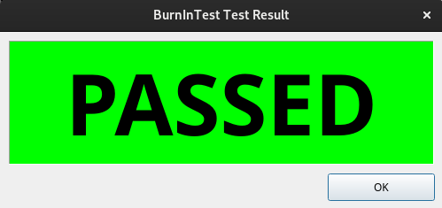

Quick Start - How to Start Testing |
Top Previous Next |
|
Here’s a summary of the steps to go through to start testing;
1.Use the Test Duty Cycles window to select the type of tests you wish to perform (see Test selection & Duty cycles). 2.Use the Configuration, Test Preferences window to set any parameters that you wish to use, e.g which hard drive to use (see Test preferences). 3.Put paper in the printer, a data CD in the CD-drive and a disk in the disk drive (if you selected these tests). 4.Click on the Start Tests button
 Test finished window showing tests passed
|